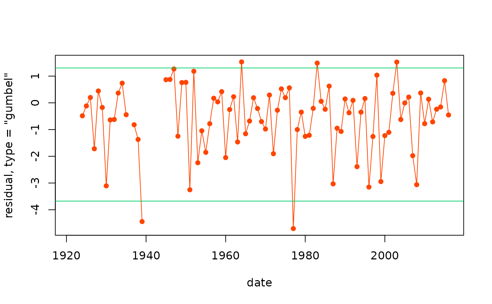

Generalised Residuals for a TVGEV model.
A TVGEV object.
The approximate distribution wanted. The choices
c("gumbel", "exp", "unif", "gev4") correspond to the
following distributions: standard Gumbel, the standard
exponential, the standard uniform, and the GEV with shape
\(-0.25\) distributions. Partial matching is allowed.
Not used yet.
A vector of generalised residuals which should
approximately be independent and approximately
follow the target distribution: standard Gumbel, standard
exponential or standard uniform, ... depending on the value of
type.
The generalised residuals are obtained by applying to each observation \(y_b\) an increasing function depending on the (estimated) GEV parameters \(\boldsymbol{\theta}_b\).
The upper 95% quantile of the standard Gumbel and the
standard exponential is close to \(3\) which can be used to
gauge "large residuals". Using type = "gumbel" seems
better to diagnose abnormally small residuals as may result
from abnormally small block maxima. The generalised residuals
have no physical dimension.
Cox, D.R. and Snell E.J. (1968) "A General Definition of Residuals". JRSS Ser. B, 30(2), pp. 248-275, doi:10.1111/j.2517-6161.1968.tb00724.x .
Katz, R.W. and Parlange, M. B. and Naveau, P. (2002) "Statistics of extremes in hydrology", Advances in Water Resources, 25(8), pp. 1287-1304, doi:10.1016/S0309-1708(02)00056-8 .
Panagoulia, D. and Economou, P. and Caroni, C. (2014) "Stationary and Nonstationary Generalized Extreme Value Modelling of Extreme Precipitation over a Mountainous Area under Climate Change". Environmetrics 25(1), pp. 29-43, doi:10.1002/env.2252 .
df <- within(TXMax_Dijon, Date <- as.Date(sprintf("%4d-01-01", Year)))
tv <- TVGEV(data = df, response = "TXMax", date = "Date",
design = breaksX(date = Date, breaks = "1970-01-01", degree = 1),
loc = ~ t1 + t1_1970)
e <- resid(tv)
plot(e)

## ggplot alternative
autoplot(e)
#> Warning: Removed 3 rows containing missing values or values outside the scale range
#> (`geom_line()`).
#> Warning: Removed 9 rows containing missing values or values outside the scale range
#> (`geom_point()`).
## plot the residual against the fitted location. Use 'as.numeric'
## on the residuals to build a similar ggplot
mu <- tv$theta[ , "loc"]
plot(mu, e, type = "p", pch = 16, col = "darkcyan",
main = "generalised residuals against 'loc'")